茨城県古河市・古河駅から徒歩7分
そば善
Soba Zen
規格外、
常識破りの蕎麦。
32年、1万4千回打ち続けて辿り着いた常陸秋そばの二八。 そこへ、6時間かけて火入れするA5等級黒毛和牛のローストビーフ。 蕎麦屋の顔をした、静かなご馳走屋です。
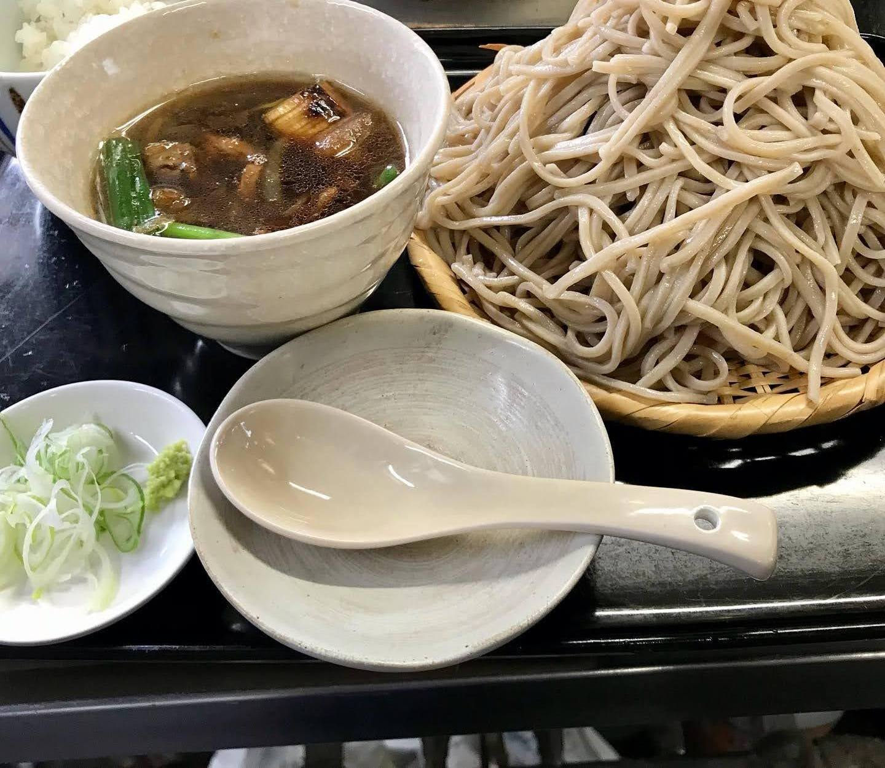
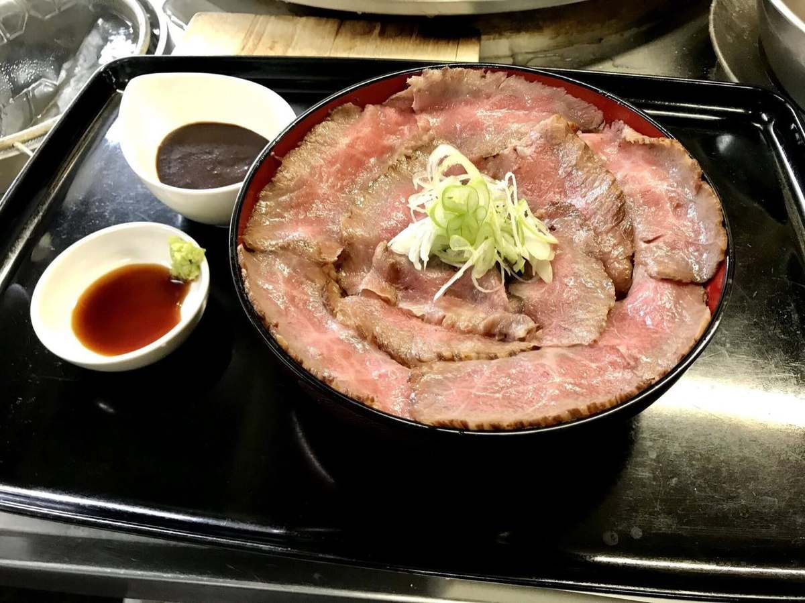
鴨もりそば（特盛）／黒毛和牛ローストビーフ丼
Two Faces
昼と夜で、店が変わります。
そば善は、昼は蕎麦とローストビーフ丼をお出しする蕎麦屋、 夜は飲み放題付きコースのご予約だけをお受けする宴の場です。 はじめての方は、ここだけ先にご確認ください。
昼｜LUNCH
11:00 – 13:00
日曜日
手打ちの常陸秋そば、鴨もりそば、黒毛和牛ローストビーフ丼。 ご予約なしでお入りいただけます。売り切れ次第終了となります。
ご予約なしでOK夜｜DINNER
17:30 – 21:30
毎日（不定休）
夜は飲み放題付きコースのご予約のみの営業です。 銘柄の地酒・クラフトビールが飲み放題、A5等級黒毛和牛のローストビーフ付き。 最大28名様まで。
要予約（6,000円〜）調理は店主がお一人で行っているため、営業開始30分前から営業中はお電話に出られないことがあります。 つながらない場合は時間をおいてお掛け直しいただくか、24時間受付のネット予約をご利用ください。 不定休のため、お越しの前に営業日をご確認いただけると確実です。
- 駐車場あり 店前2台・店横に専用2台。近隣コインパーキングをご利用の場合は駐車料金を全額補助します（お会計時にお申し出ください）。
- 古河駅から徒歩7分 JR宇都宮線 古河駅東口から451m。店の前にバス停「そば善前」があります。
- お子様連れ歓迎 ベビーカーのままご入店いただけます。お子様セット（550円）もご用意。
- 全席禁煙・無料Wi-Fi テーブル席とお座敷で24席。最大28名様まで着席いただけます。
Soba
鴨汁と、常陸秋そば。
茨城のブランド蕎麦「常陸秋そば」を石臼で挽き、二八で打つ。 創業以来ずっと一番人気なのが、この蕎麦を大量の酒で酒煎りした鴨汁で手繰る一杯です。
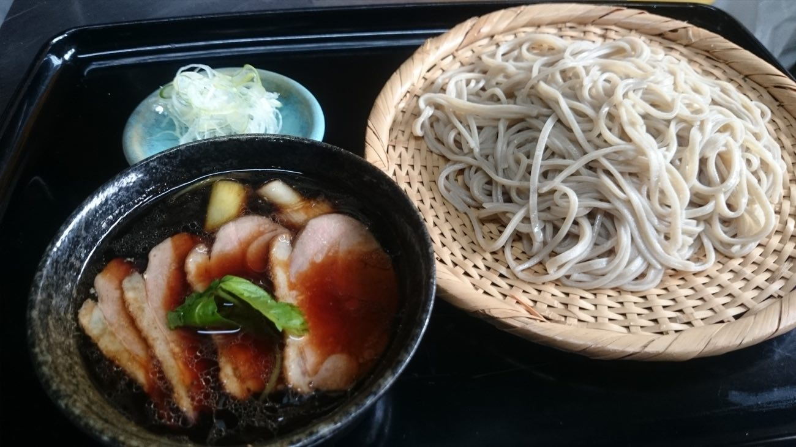
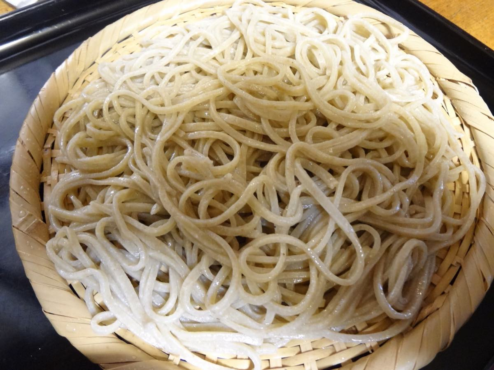
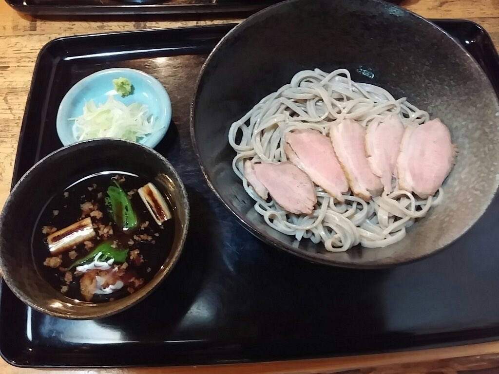
大量の酒で酒煎りし、
臭みを抜いた鴨汁。
国産の合鴨を丁寧に下処理し、大量の酒で酒煎りして臭みをすべて取り除いてから、 旨味だけを凝縮させたのがそば善の鴨汁です。芳醇な脂の甘みと、そば汁の旨味が重なります。
おすすめの食べ方は、まず蕎麦を鴨汁にくぐらせて手繰り、 〆に鴨汁へご飯を入れ、そば湯と焦がし七味をお好みで落としてお茶漬け風に。 最後の一滴まで使い切る食べ方です。
32年そば打ち1万4千回以上、40トン以上作って辿り着いたのが今の私の蕎麦。 常識外の滑らかさとツルツルとしたしなやかな蕎麦のため、 「饂飩みたいだ」「そば粉の割合が少ない」等とお書きになる方が増えましたが、 正真正銘、嘘偽りのない大道の蕎麦。 他には無い、極限まで高めた技術で作ったそばを是非体験してください。
— 店主（ホットペッパーグルメ 掲載文より）
Wagyu
A5等級、6時間の低温火入れ。
蕎麦屋でありながら、口コミで「絶品」と名前が挙がるのが自家製ローストビーフ。 A5等級の黒毛和牛を、オリジナルの低温火入れでゆっくり6時間かけて仕込みます。
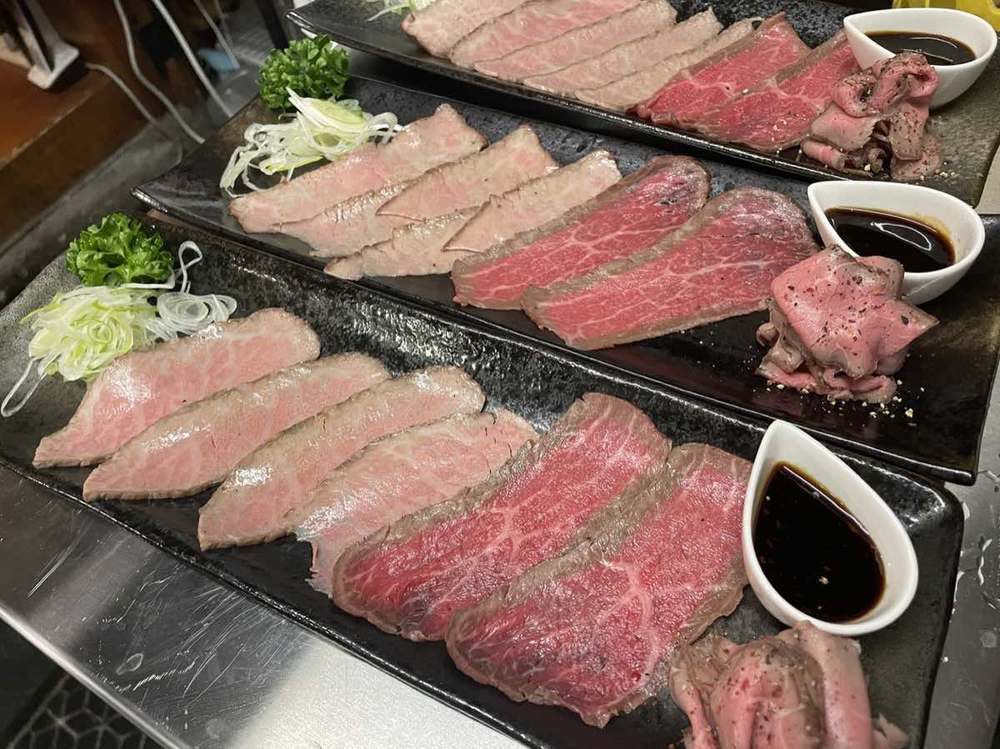
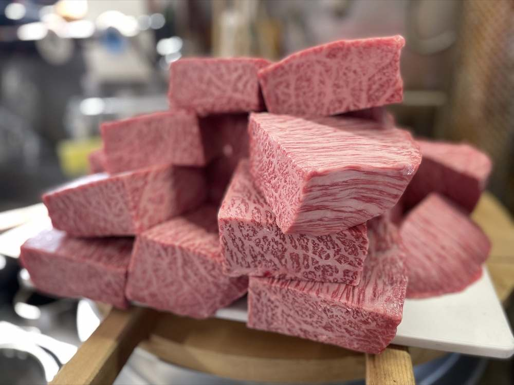
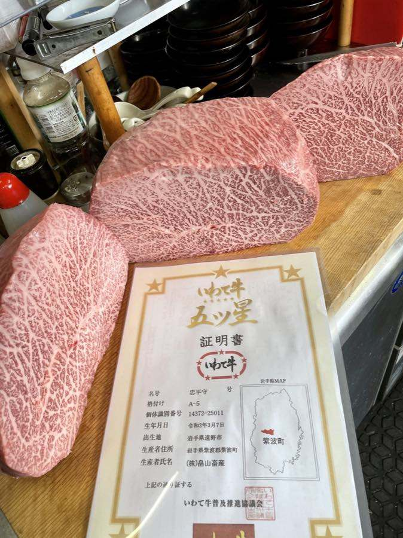
一頭ごとの格付証明書つき。
使うのは主に常陸牛・仙台牛などの黒毛和牛。仕入れる肉には 一頭ごとの個体識別番号と等級の証明書が付きます（写真はA-5等級のもの）。 低温でゆっくり火を入れることで、噛んだ瞬間に上品な甘みとジューシーな肉汁が広がります。
ローストビーフ丼は、そのまま食べても、海苔で巻いて手巻き寿司風にしても。 蕎麦とのセットにすれば、そば善の看板を一度に味わえます。
Course
夜は、飲み放題付きコースで。
17:30以降はコースのご予約のみの営業です。飲み放題ではまず見かけない銘柄の地酒を、 ドリンクバーのようにセルフでお好きなだけ。A5等級黒毛和牛のローストビーフは全コースに付きます。
ライトコース
6,000円（税込）
- お料理は軽めに、飲み中心で楽しみたい方へ
- 仙台牛A5等級 自家製ローストビーフ
- 生ビール＋銘柄酒＋果実酒＋シャンパン＋ワイン 飲み放題
- 〆に自家製あんこ玉
レギュラーコース
7,000円（税込）
- 前菜から〆の蕎麦まで、そば善のひと通りが揃う
- 仙台牛A5等級 自家製ローストビーフ
- 銘柄酒 飲み放題
- 〆は常陸秋そばの二八もり蕎麦（またはラーメン）
スペシャルコース
8,000円（税込）
- クラフトビール2種も飲み放題に加わる贅沢版
- 仙台牛A5等級 自家製ローストビーフ
- 〆の常陸秋そば＋自家製あんこ玉まで
- 十四代・飛露喜・山崎などのプレミアム酒は追加料金でご用意
お料理の一例（レギュラー／スペシャル）
- 前菜／ポテ玉サラダ、焼き枝豆、チャンジャ、炙り明太子、揚げ蕎麦ナッツ、チーズ醤油ビーツクラッカー など日替わり
- 蕎麦の一品／昆布水蕎麦、チーズ蕎麦バター醤油和え など
- 季節の野菜／新玉ねぎ、フルーツトマト など
- 揚げもの／茄子とマグロのフリット、熱々フライドポテト など
- 鉄板焼き肉／ハラミ、クツベラ、タン、キクアブラ など
- 仙台牛A5等級 自家製ローストビーフ
- 〆／常陸秋そばの二八もり蕎麦（またはラーメン）
飲み放題の中身（2時間）
- 日本酒／獺祭・鳳凰美田・八海山・御慶事・山形政宗・夜明け前・明鏡止水 ほか
- ビール／生ビール、クラフトビール（スペシャルコース）
- ハイボール／ブラックニッカ・角・ニッカセッション・ジャックダニエル・イチローズモルト白 ほか
- 焼酎／中々・山猫・熟柿・赤霧島・黒霧島・無一物 ほか
- 果実酒／あらごし桃酒・鳳凰美田柚子酒・つぶつぶみかん酒・ブラッドオレンジ酒・梅酒・カシス ほか
- ワイン・シャンパン／サワー各種／ノンアル・ソフトドリンク
- ドリンクバーのように、お好きな銘柄をお好きな量セルフでどうぞ
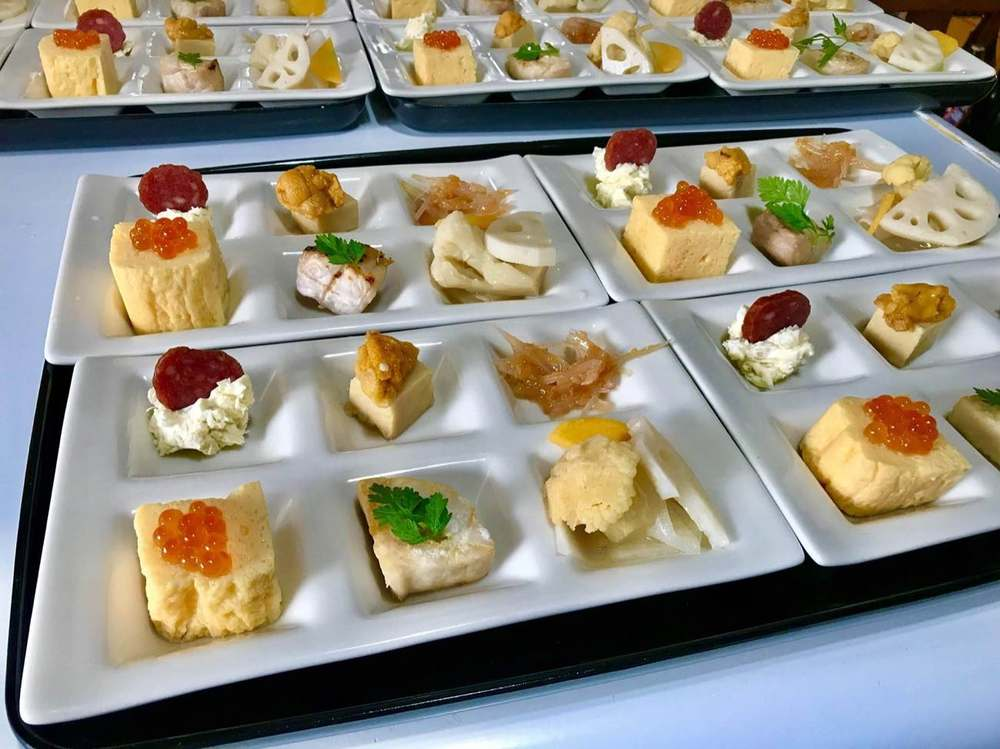
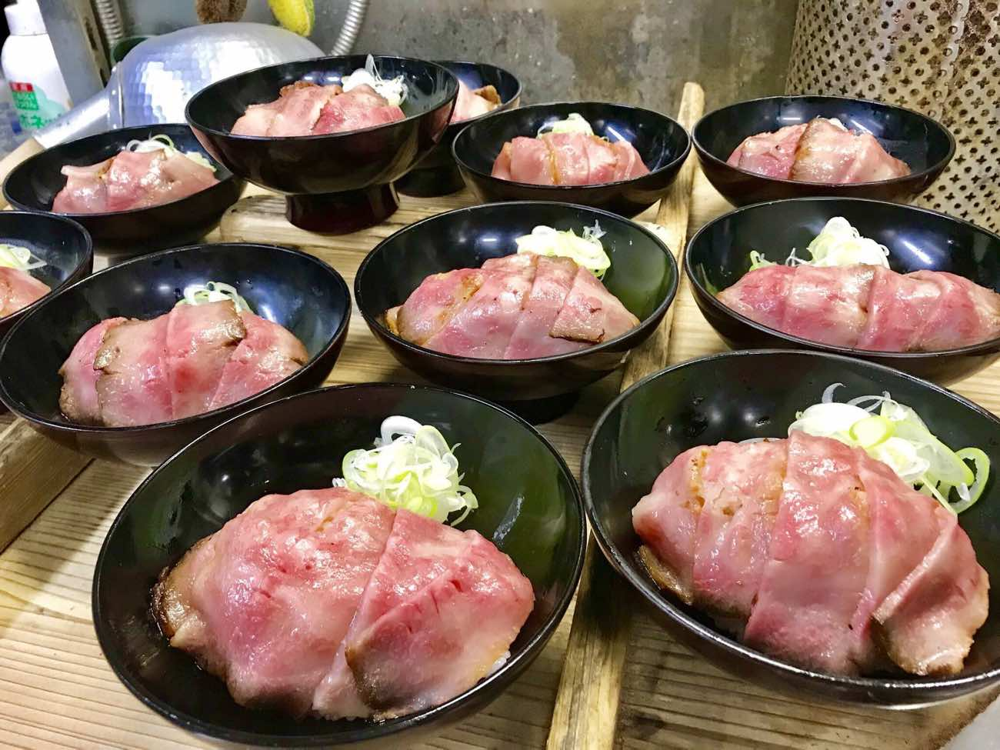
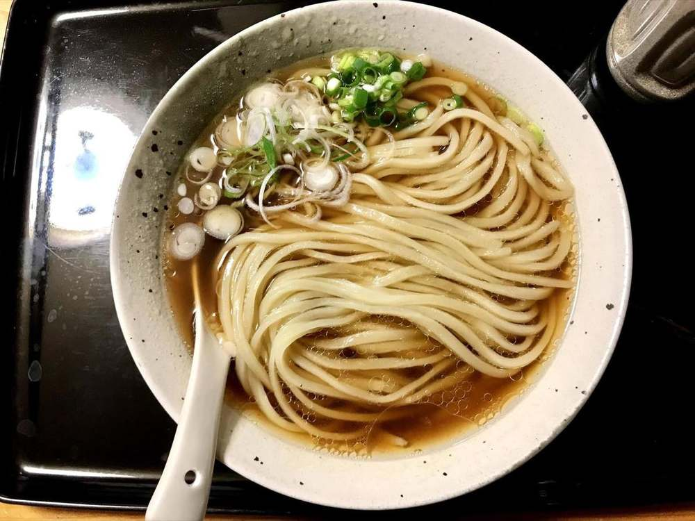
※コースは事前のご予約制です。ネット予約は来店日の3日前23時まで受付。 飲み放題は2時間、ご滞在は2時間30分まで。17:30以降のご利用に限ります。 お酒は在庫に限りがあり品切れの場合があります。季節によりお料理の内容は変わります。 少人数・大人数のご相談、お祝いやサプライズのご希望はお電話でお伝えください。
Sake & Beer
蕎麦屋の酒棚が、少しおかしい。
十四代、而今、飛露喜、田酒。地元・古河の御慶事。 さらにTap Marcheのクラフトビールに、山崎・白州・イチローズモルトのハイボールまで。 店主が選んだ酒が、蕎麦屋の棚に並んでいます。表示は税込価格です。
以下は単品でご注文いただく場合の価格です。 夜のコースをご予約のお客様は、下記の多くが飲み放題（2時間）に含まれます。 プレミアム酒のみ、コースのお客様は追加料金でご用意しています。
プレミアム日本酒
- 十四代1,650円
- 而今880円
いずれも半合。品切れの際はご了承ください。
日本酒（一合）
- 御慶事 純米吟醸茨城県古河市990円
- 写楽 純米吟醸福島県990円
- 鳳凰美田 純米吟醸栃木県小山990円
- 田酒 純米青森県1,100円
- 山形政宗山形県880円
- 夜明け前長野県880円
- 八海山新潟県南魚沼市770円
- 明鏡止水 辛口本醸造660円
- 越の景虎 辛口本醸造660円
- 米一途 純米490円
クラフトビール・ビール
- Tap Marche 本日のクラフトビール596〜600円
- 生ビール（中）600円
- グラスビール380円
- 瓶ビール（中瓶）600円
ハイボール
- 山崎990円
- 白州990円
- イチローズモルト710円
- AO（あお）710円
- ニッカセッション660円
- ブラックニッカ550円
焼酎・その他
- 百年の孤独（麦）710円
- 佐藤（芋）596円
- 赤霧島（芋）600円
- 八海山（米）600円
- そば焼酎のそば湯割り550円
- サンテロ ブラックブリュット2,800円
- ソフトドリンク・ノンアル各種329〜410円
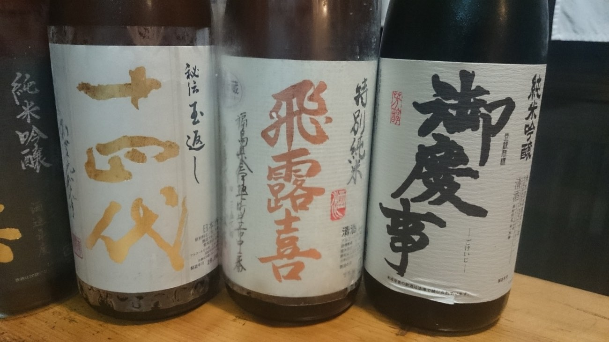
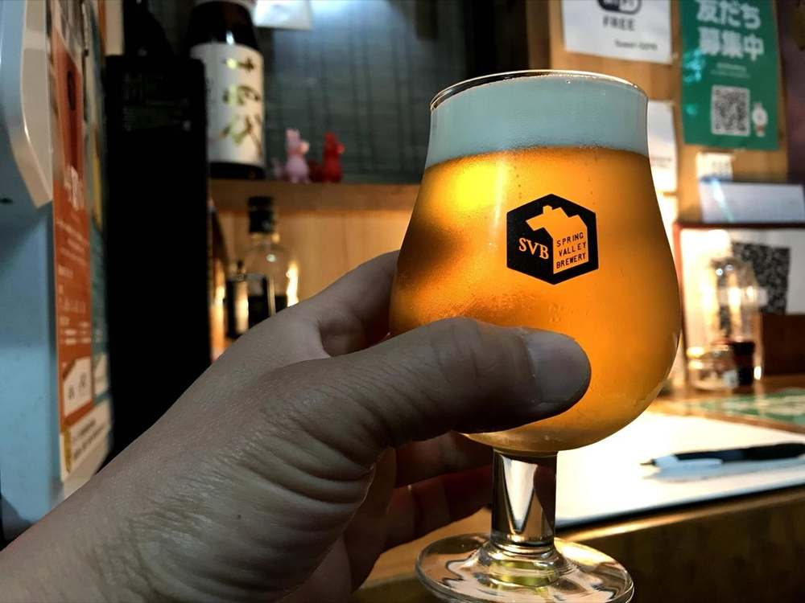
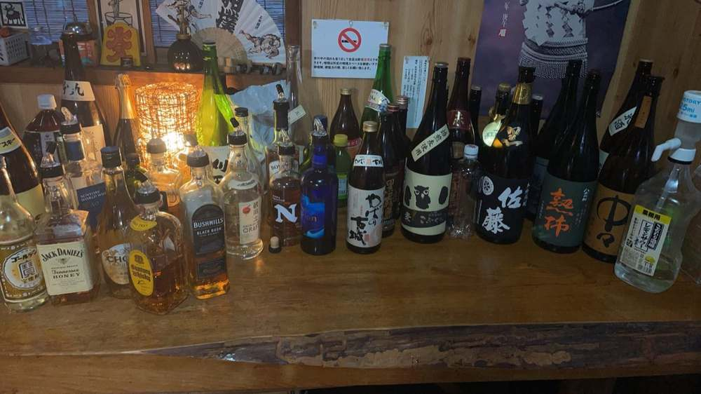
Voice
お客様の声
食べログに寄せられた口コミのタイトルから。
蕎麦屋なのに
食べログ 口コミより
ローストビーフが絶品
鴨汁が最高！
食べログ 口コミより
濃厚なつけ汁が美味しい
バス停の名前にもなっている
食べログ 口コミより
地元では有名なお蕎麦屋さんです
Space
黒板塀の一軒家、24席。
古河駅から徒歩7分、黒い板塀の一軒家。テーブル席とお座敷を合わせて24席、 くっつければ最大28名様まで着席いただけます。全席禁煙・無料Wi-Fiあり。
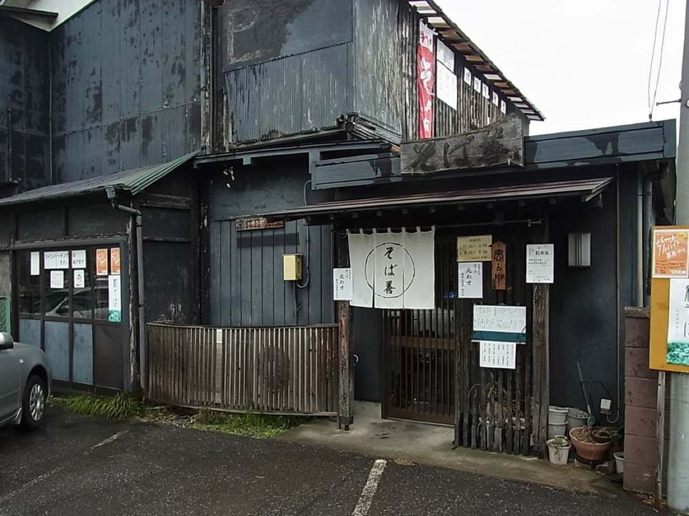
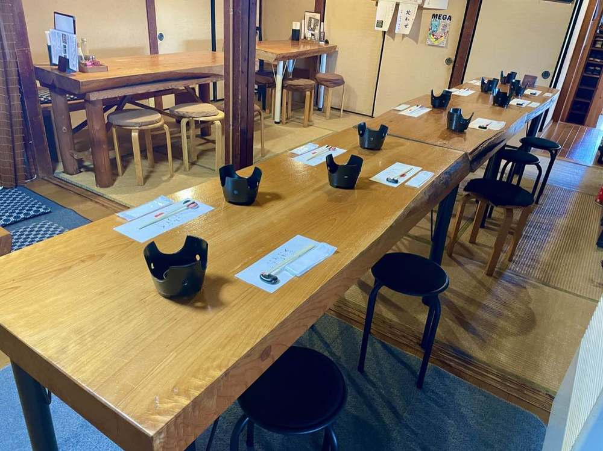
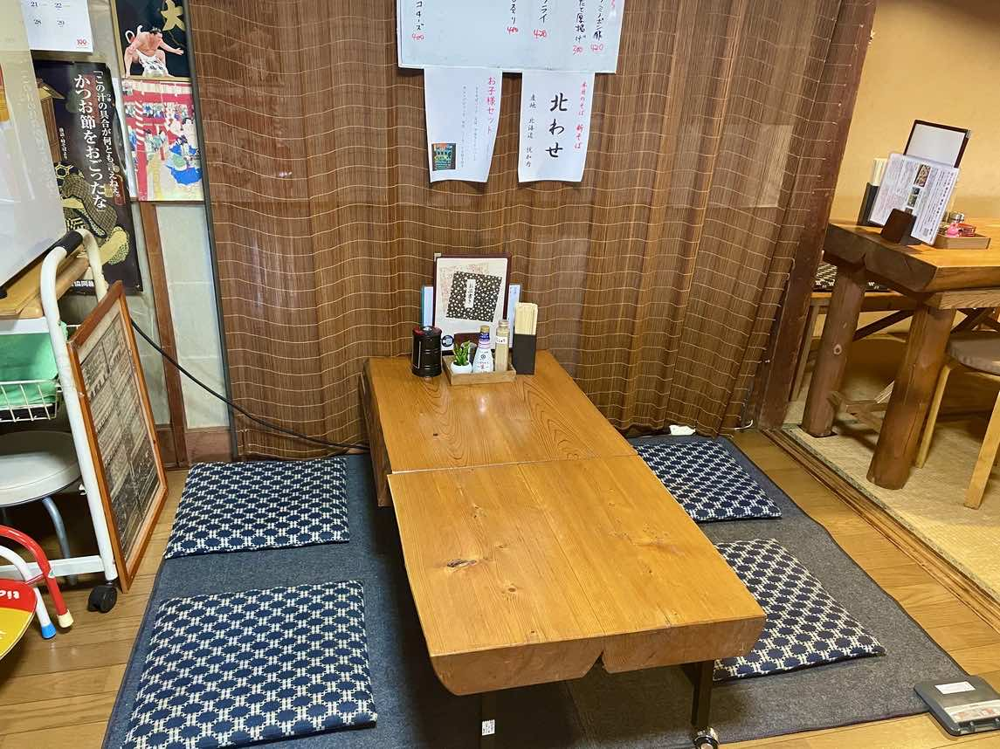
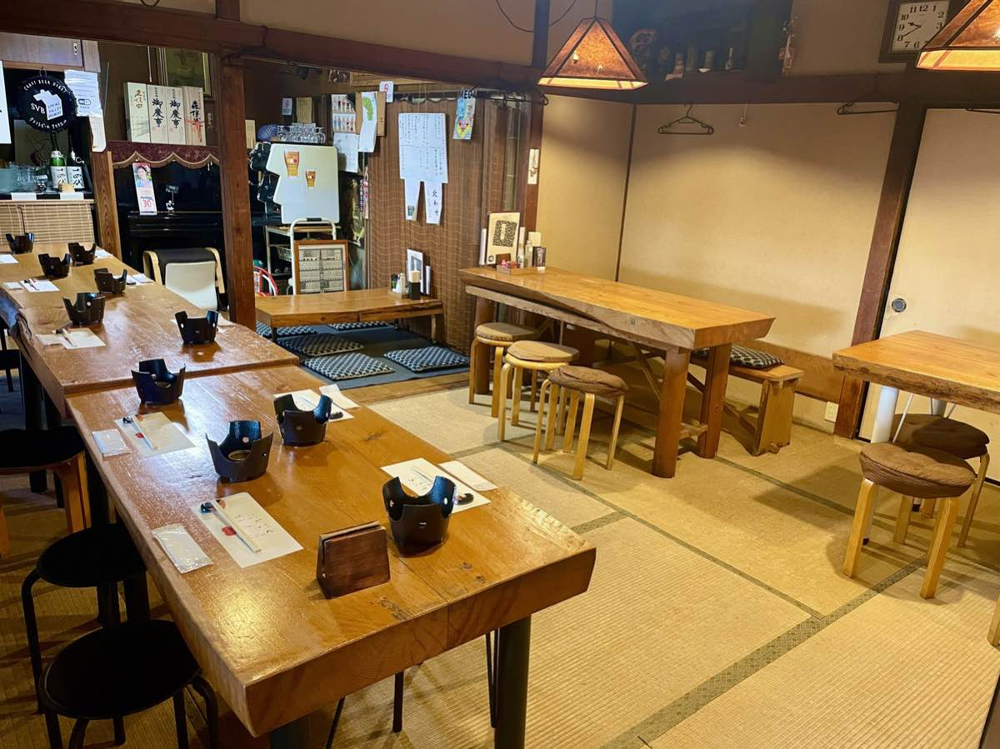
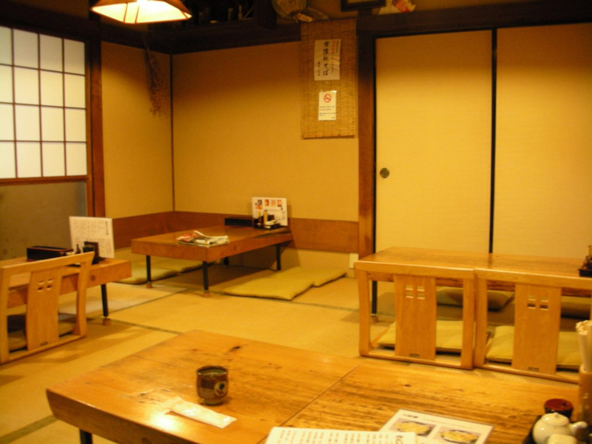
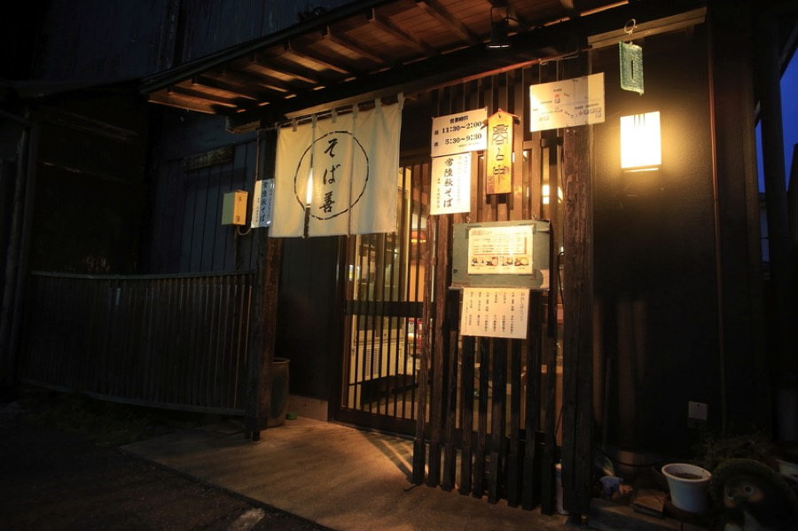
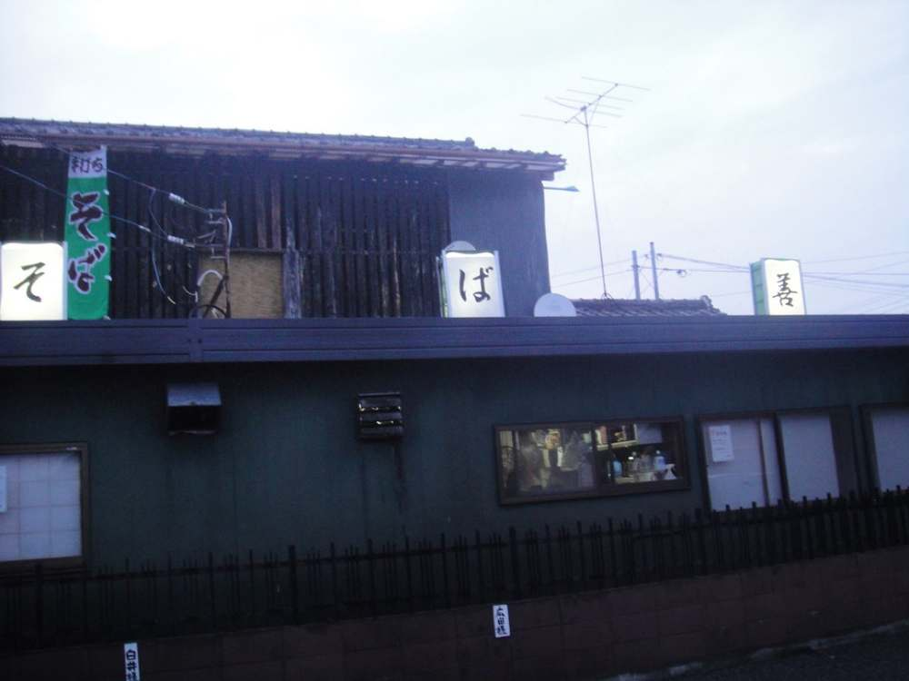
Access
アクセス・ご予約
JR宇都宮線 古河駅東口から徒歩約7分。駅前通りを東へ進み、2つ目の信号を右折して道なりに。 アパホテルの前を過ぎ、信号を越えて150メートルほど進んだ左側です。
| 住所 | 〒306-0016 茨城県古河市古河527-4 |
|---|---|
| 電話 | 0280-32-7067調理は店主お一人のため、営業30分前〜営業中はお電話に出られないことがあります。 |
| 昼の営業 | 日曜 11:00〜13:00ご予約なしでご利用いただけます（売り切れ次第終了）。 |
| 夜の営業 | 毎日 17:30〜21:30飲み放題付きコースのご予約のみの営業です。 |
| 定休日 | 不定休お越しの前にお電話でご確認ください。 |
| 席数 | 24席（テーブル・お座敷）／最大28名様まで着席可個室なし・全席禁煙・無料Wi-Fiあり |
| 駐車場 | あり（店前2台・店横専用2台）近隣コインパーキングをご利用の場合は駐車料金を全額補助します。お会計時にお申し出ください。 |
| アクセス | JR宇都宮線 古河駅東口から徒歩約7分（451m）店の前にバス停「そば善前」があります。 |
| お支払い | 現金VISAMasterJCBAMEXDiners交通系ICnanacoWAONiDQUICPayPayPayd払い楽天ペイau PAY |
ご予約について
夜のコースは事前のご予約が必要です。お電話が一番確実ですが、 つながらないときや営業時間外は、24時間受付のネット予約をご利用ください。
- ご希望の日時（夜は17:30以降）
- ご人数
- コース（ライト6,000円／レギュラー7,000円／スペシャル8,000円）
この3点をお伝えいただくと、お電話が短く済みます。 少人数・大人数のご相談、お祝いやサプライズのご希望もお気軽にどうぞ。
Takeout
持ち帰りは、金・土・日。
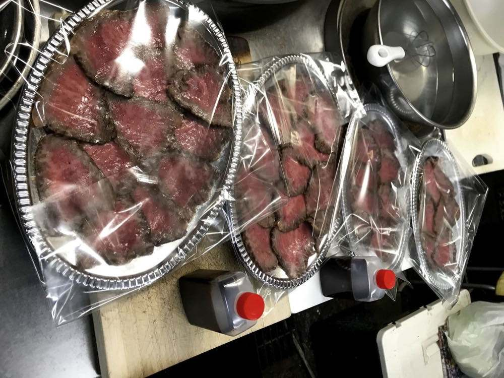
ご自宅で蕎麦を茹でていただける生そばや、お酒のあてになるおつまみをご用意しています。 年越しそばなどのご予約も承ります（受付時期はお問い合わせください）。
- 黒毛和牛ローストビーフ1,999円
- 生そば1人前・極上そば汁付き600円
- 特製鴨汁1人前440円
- 五合そばご家族向き・4人前分2,400円
- クリームチーズのだし醤油漬け580円
- 山盛りポテトフライ580円
- 豆腐の味噌漬け480円
- 梅水晶400円
生そばの解凍は冷蔵庫で6時間〜半日。お急ぎの場合は2人前につき電子レンジ200Wで3分ほど、様子を見ながら温めてください。
ご注文はお電話で承ります。お受け取り希望の日時と品目をお伝えください。 数に限りがありますので、前日までにご連絡いただけると確実です。